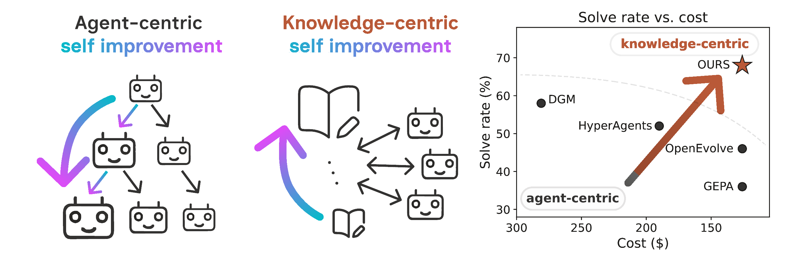
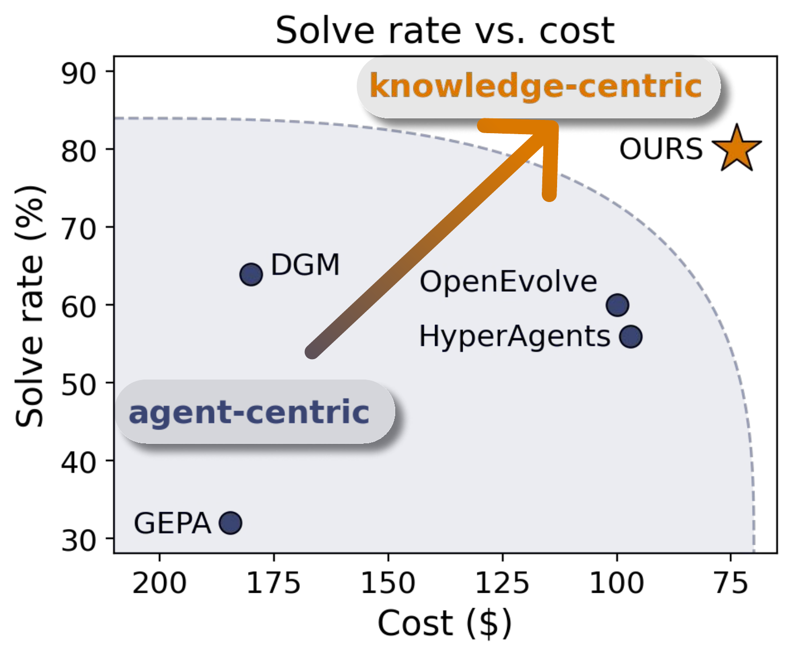

Stateless, disposable agents improve a shared, curated knowledge base instead of themselves — higher solve rates at a fraction of the cost, and knowledge that transfers across tasks and model families.
California Institute of Technology

Self-improving AI systems typically treat the agent as the object that improves, by optimizing prompts, workflows, harnesses, or even the agent’s own code. This agent-centric view can make improvements expensive to maintain and difficult to transfer, because gains become tied to a particular agent design, task distribution, or adaptation run. We study a complementary paradigm: knowledge-centric self-improvement, in which agents remain generic, stateless, and disposable while the persistent object is a curated knowledge base. We conduct controlled case studies to operationalize this idea via a simple protocol. Agents make attempts on one task, then contribute evidence-grounded insights to a shared knowledge base via task-level and cross-task forums, followed by distillation. Because self-improvement is contained in the knowledge itself rather than the agent, improvement becomes inspectable, transferable, and portable. Across abstract reasoning, coding, and terminal benchmarks, this protocol improves solve rates while reducing token cost relative to agent-centric baselines. The resulting bundles also transfer to held-out tasks and across model families, indicating that the improvement is not merely a model- or run-specific behavior. These results support a new view of self-improving agentic systems: progress can be driven primarily by the curated persistent knowledge they leave behind.
Every agent is a fresh, stateless solver: it seeds from the shared knowledge base, attempts one task, and writes evidence back. The only thing that improves across generations is the base — curated through a three-stage protocol.
The knowledge curation protocol shown as a loop of five steps: Seed, Attempt, Task-level forum, Cross-task forum, and Distillation. A stateless agent seeds from the shared knowledge base, attempts one task, and its evidence is curated through a task-level forum and a cross-task forum. At Distillation the surviving insight is written back to the base, which sits at the center as a growing pile of insight notes — one note added per generation while the agents stay fixed. Use the step tabs to jump to any step; play, pause, or change speed.
Agents turn raw traces into local evidence — what helped, what misled — scoped to the task it came from.
Agents discuss what transfers across the generation’s tasks. Each claim is grounded in a primitive; replies agree, disagree, refine, or synthesize — disagreement counts as evidence, not noise.
Surviving claims are distilled into typed bundles and written back to the base; the next generation seeds from them.
We compare against agent-centric self-improvement baselines (DGM, HyperAgents) and strong agentic systems on Terminal-Bench 2, all at the Haiku 4.5 backbone where available. Every number below is reproducible with the open-source KSI framework — see the benchmarks guide for datasets and run presets.

| Method | ARC-AGI-1 | ARC-AGI-2 | Polyglot | SWE-bench Pro | ||||
|---|---|---|---|---|---|---|---|---|
| Solve ↑ | Cost ↓ | Solve ↑ | Cost ↓ | Solve ↑ | Cost ↓ | Solve ↑ | Cost ↓ | |
| Ours (Haiku 4.5) | 82% | $46 | 76% | $65 | 80% | $92 | 84% | $76 |
| HyperAgents (Haiku 4.5) | 70% | $150 | 60% | $120 | 56% | $97 | 42% | $276 |
| DGM (Haiku 4.5) | — | — | — | — | 64% | $180 | 66% | $456 |
Performance across abstract reasoning and coding benchmarks over 10 generations. DGM only targets coding, so ARC entries are omitted. All baselines are rerun under our evaluation protocol.
| Method | Terminal-Bench 2 |
|---|---|
| OpenHands | 13.9% |
| Terminus 2 | 28.3% |
| Mini-SWE-Agent | 29.8% |
| Terminus-KIRA | 33.7% |
| Goose | 35.5% |
| Meta-Harness (Opus 4.7 + Haiku 4.5) | 37.6% |
| Ours (Haiku 4.5) | 47.2% |
Terminal-Bench 2 leaderboard scores where available, otherwise from the corresponding papers. Our simple agents reach competitive performance without changing the agent or scaffold — only the shared knowledge improves.
| Method | ARC-AGI-1 | Polyglot |
|---|---|---|
| Ours (Haiku 4.5) | 82% | 80% |
| OpenEvolve | 54% | 60% |
| GEPA | 44% | 36% |
Against prompt-optimization methods under matched improvement budgets ($50 on ARC-AGI-1, $100 on Polyglot). Curating a reusable knowledge artifact beats optimizing a reusable solver prompt — a distinct self-improvement axis from the agent-centric baselines above.
| Backbone | Polyglot | SWE-bench Pro | ARC-AGI-1 | ARC-AGI-2 | ||||
|---|---|---|---|---|---|---|---|---|
| Solve ↑ | Cost ↓ | Solve ↑ | Cost ↓ | Solve ↑ | Cost ↓ | Solve ↑ | Cost ↓ | |
| Haiku 4.5 | 80% | $92 | 84% | $76 | 82% | $46 | 76% | $65 |
| GPT-5.4-mini | 74% | $55 | 82% | $82 | 86% | $18 | 84% | $20 |
The same procedure remains effective when the backbone changes; the best backbone depends on the task family.
We freeze a generation-10 knowledge bundle and apply it zero-shot to disjoint evaluation tasks — with no new forum, no recipient-side distillation. Rows are receivers; columns are donors. Darker = higher solve rate.
| Receiver \ Donor | None | GPT | Haiku |
|---|---|---|---|
| GPT-5.4-mini | 18% | 48% | 62% |
| Haiku 4.5 | 12% | 56% | 50% |
| Receiver \ Donor | None | GPT | Haiku |
|---|---|---|---|
| GPT-5.4-mini | 32% | 42% | 38% |
| Haiku 4.5 | 18% | 24% | 20% |
Both transfer conditions strictly extend the no-knowledge baseline's solved set, with gains under both GPT and Haiku donors — evidence the bundle carries donor-agnostic structure, not donor-specific habits.
The complete run, shown through the same curation loop used in the worked ARC and Terminal-Bench examples: task-level evidence, cross-task synthesis, then a distilled bundle for the next generation.